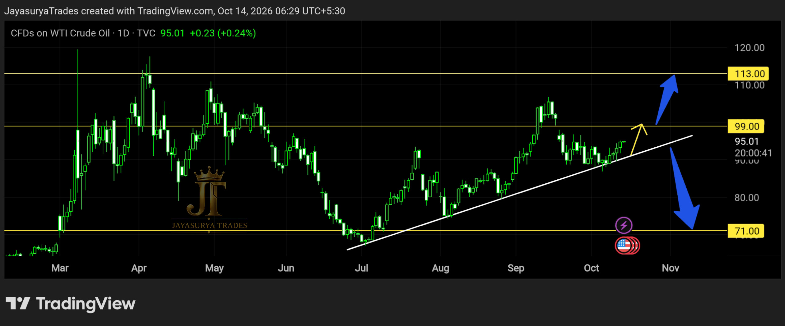

For this Wednesday Market Focus, I am looking at Crude Oil / WTI (USOIL). In last week's analysis, I highlighted the possibility that price could take rejection from the ascending trendline and then move upward to fill the gap above. The market subsequently followed that scenario, moving upward toward the gap area.
The upward move also took place around the time of reports about a ceasefire involving Russia and Ukraine announced by Donald Trump. In last week's analysis, the potential upward move had been identified before that announcement. This is a comparison between the earlier chart scenario and the subsequent market movement; it does not mean that news or price movement can be predicted with certainty.

Current Market Structure
Price has taken rejection from the ascending trendline, as considered in the previous analysis. The market remains in an upward move toward the gap above. The immediate scenario I am watching is whether price continues upward until the gap is filled, with 91 marking the upper boundary of the gap.
The next decision depends on how price behaves around and above that gap. Rather than assuming that the upward move must continue, I will wait for the daily candle close and the market's reaction around the level to provide confirmation.
113 → Potential upside scenario if price breaks and sustains above the gap
71 → Potential larger downside scenario if the ascending trendline breaks with confirmation
91 — The Upper Boundary of the Gap
The 91 price level is the upper boundary of the gap I am watching. If price continues upward and fills the gap, I will then observe whether the market breaks above this area or rejects it. Reaching the gap alone is not confirmation that the broader upward move will continue.
A daily candle close above the gap, followed by a retest or rejection around or above the gap, could support the continuation scenario. I will wait for that price behaviour to develop instead of assuming the breakout in advance.
Bullish Continuation Scenario — Potentially Toward 113
If Crude Oil continues to break above 91 and the breakout is supported by a candle close, the market could potentially move toward 113. A daily close above the gap followed by a retest or rejection around or above the gap would provide additional confirmation for the continuation scenario.
The market may also continue above the gap without a clear retracement. In either case, I will watch how price closes and behaves around the level. This remains a potential scenario, not a guaranteed target or a certainty that price will reach 113.
Bullish confirmation: daily candle close above the gap
Additional confirmation: a retest or rejection around/above the gap
Potential continuation level: 113
Alternative Scenario — Ascending Trendline Breakdown
There is also a possibility that the market could break below the ascending trendline after filling the gap. This is an alternative scenario to monitor, not an outcome to assume in advance. I will wait for confirmation from price rather than anticipate a breakdown simply because the gap has been filled.
A candle close below the ascending trendline would be the confirmation I am watching for this bearish scenario. If that occurs, Crude Oil could potentially move lower, with 71 as the larger downside level in this analysis.
For Short-Span Traders
If a confirmed trendline breakdown develops, traders may monitor intermediate price levels for possible profit-taking or consider trailing a stop-loss according to their own trading plan and risk management. The move toward 71 remains conditional on the bearish structure developing; it is not a certainty.
What I Am Watching Now
Scenario 1 — Gap Fill and Bullish Continuation
If the ascending trendline continues to hold, price could continue upward to fill the gap, whose upper boundary is 91. A daily candle close above the gap, followed by a retest or rejection around or above it, could support the continuation scenario toward 113.
Scenario 2 — Trendline Breakdown
If price closes below the ascending trendline, the bearish scenario comes into focus. Following confirmation, the market could potentially move lower toward 71. Until a confirmed candle close below the trendline appears, this remains only an alternative possibility.
The Two Scenarios I Am Watching
Bullish Continuation
A continued upward move could fill the gap up to its upper boundary at 91. A daily close above the gap, followed by a retest or rejection around or above it, could support further upside toward 113.
Bearish Breakdown
If price confirms a break below the ascending trendline with a candle close, the market could potentially move toward 71. I will wait for that confirmation rather than assume the trendline will break after the gap is filled.
Key Takeaways
- The previous analysis highlighted a possible rejection from the ascending trendline followed by an upward move toward the gap.
- Price subsequently moved upward toward the gap area, around the time of reports about a Russia–Ukraine ceasefire announcement.
- 91 is the upper boundary of the gap being watched.
- A daily candle close above the gap, followed by a retest or rejection around/above it, could support bullish continuation.
- If price breaks above the gap with a candle close, with or without a retracement, 113 is the potential upside level being watched.
- An alternative scenario is a break below the ascending trendline after the gap is filled.
- A candle close below the ascending trendline is the confirmation being watched for the bearish scenario.
- If the bearish scenario develops, 71 is the potential larger downside level.
- Intermediate levels may be considered for profit-taking or trailing a stop-loss according to an individual trading plan.
- Neither scenario should be assumed before the market provides confirmation.
The objective is not to assume what the market must do next. I am watching the gap boundary at 91, the possible continuation toward 113, and the ascending trendline as the key structure for the alternative downside scenario toward 71.
Watch the 91 gap boundary.
Wait for the candle-close confirmation.
Let the market confirm the next move.
One day. One market. One focused analysis.
Levels. Structure. Scenarios. Confirmation.
No hype. Just how the market behaves.
Watch. Wait. Confirm.
Risk Disclaimer
This analysis is provided for educational and informational purposes only and
should not be considered financial advice or a recommendation to buy or sell
any financial instrument.
Trading involves substantial risk. Always conduct your own research and follow
your own trading plan and risk-management rules.